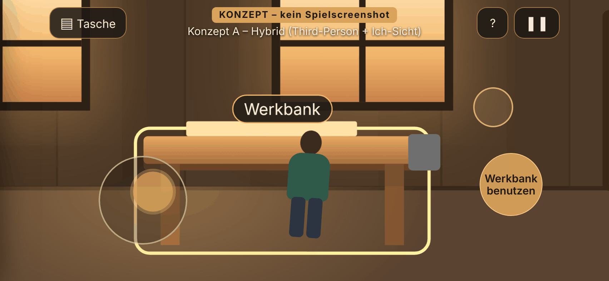
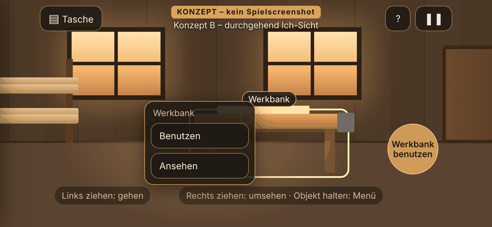
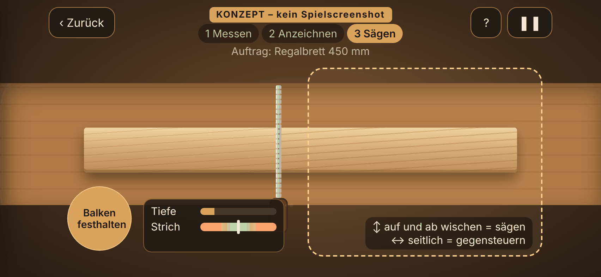
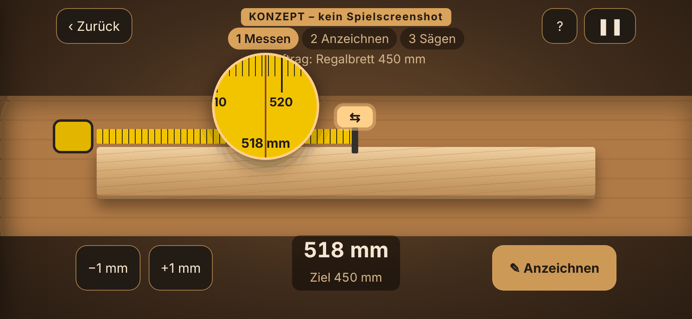
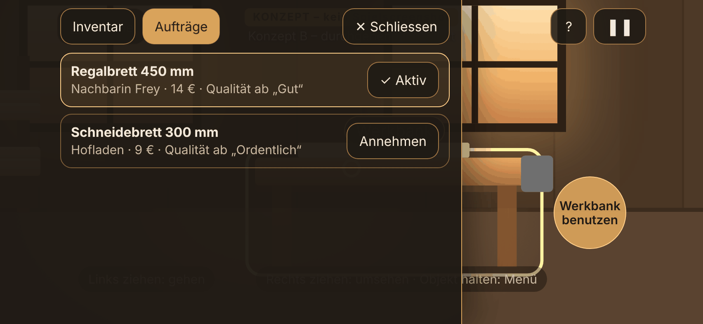
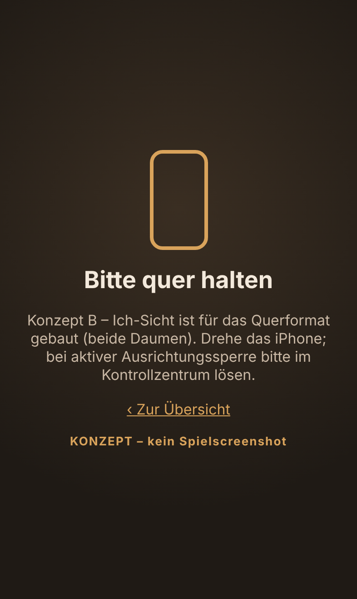

Handcraft Life · Steuerung A oder B?
Zwei antippbare Attrappen der Touch-Steuerung (Ticket 003). Keine 3D-Grafik, nur Bedienung zum Ausprobieren.
So testest du: 1. Konzept öffnen · 2. iPhone quer halten · 3. Links ziehen = gehen, rechts ziehen = umsehen ·
4. Zur Werkbank gehen und „Werkbank benutzen“ tippen · 5. Massband ziehen, anzeichnen, sägen (rechts auf und ab wischen, links festhalten).
Das ? oben rechts zeigt alle Gesten.
Konzept A – Hybrid
Gehen mit sichtbarer Figur von hinten (Third-Person). An der Werkbank wechselt die Kamera automatisch in die Ich-Sicht.

Konzept A öffnenKonzept B – Ich-Sicht Empfehlung Vertical Slice
Durchgehend aus den eigenen Augen. Fadenkreuz in der Mitte wählt Objekte; Werkbank zoomt in eine feste Arbeitsansicht.

Konzept B öffnenLegende
| Geste | Was passiert |
|---|---|
| Linke Hälfte ziehen | Gehen – ein Stick erscheint dort, wo der Daumen aufsetzt |
| Rechte Hälfte ziehen | Umsehen (A: Kamera kreist um die Figur) |
| Zwei Finger rechts | A: Kameraabstand · B: genau hinsehen |
| Objekt antippen / halten | Auswählen / nach 0,3 s Kontextmenü (Ring zeigt den Fortschritt) |
| Grosse runde Taste rechts | Aktion zum markierten Objekt, z. B. „Werkbank benutzen“ |
| Werkbank | Massbandgriff ziehen (Lupe zeigt mm, ±1 mm feinstellen) → Anzeichnen → rechts auf/ab wischen = sägen, links „festhalten“ |
| Tasche oben links | Inventar und Aufträge |
Bilder (Playwright, 852 × 393 pt)
Alle Bilder: Konzeptbild – kein Spielscreenshot.




Konzeptpapier: docs/design/steuerung-a-b.md · ‹ Zur Startseite